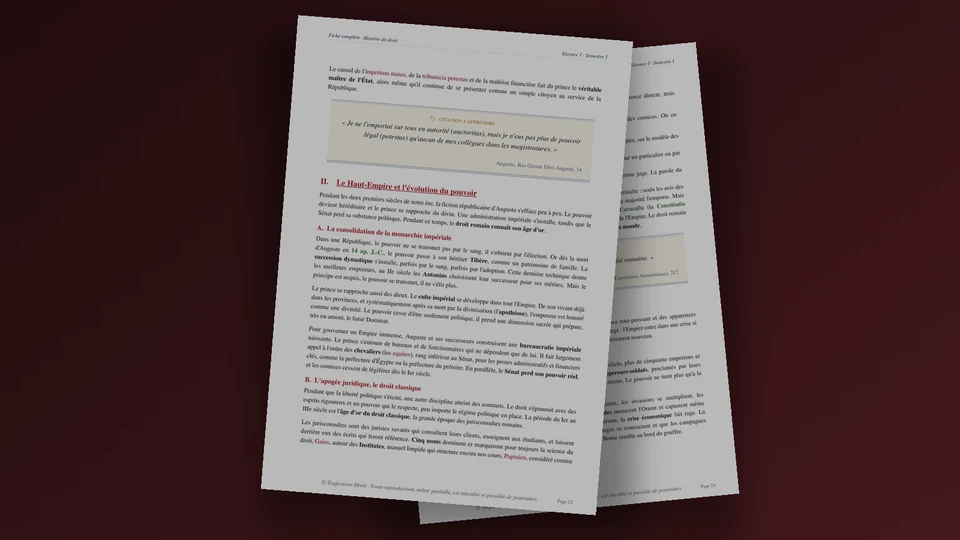

La méthode du commentaire de texte juridique, étape par étape
Le commentaire de texte juridique consiste à analyser en détail un texte précis, comme un extrait de doctrine, un discours, une vieille coutume ou une loi ancienne. Il faut expliquer ce que le texte apporte, au lieu de le répéter avec d'autres mots. La thèse, c'est l'idée que l'auteur défend. On commence par trouver la thèse du texte, puis on la replace dans son contexte. On construit ensuite un plan en deux parties qui suit ou éclaire le raisonnement du texte, phrase après phrase.
Le commentaire de texte se rencontre surtout en histoire du droit et en droit constitutionnel, parfois en relations internationales ou en philosophie du droit. Le texte à commenter est rarement une décision de justice récente. Il s'agit plutôt d'un discours politique, d'un extrait de doctrine, d'une vieille coutume ou d'un article de loi disparu depuis longtemps. Ce type de texte distingue donc l'exercice du commentaire d'arrêt, qui porte toujours sur une décision de justice.
Le commentaire de texte ressemble à la dissertation juridique dans sa forme, puisqu'on y rédige aussi une introduction construite, puis deux parties reliées par des transitions. Sur le fond, en revanche, les deux exercices diffèrent nettement. Une dissertation répond à une question générale posée par le sujet, et l'étudiant peut y utiliser librement ses connaissances. Un commentaire de texte part au contraire du texte lui-même. Il faut donc y revenir sans cesse et citer ses mots précis. Ainsi, le correcteur sait à chaque moment du devoir quel passage est commenté.

La fiche complète d'histoire du droit, L1 semestre 1
Les textes de l'histoire du droit, replacés dans leur époque par la fiche de L1
Le commentaire de texte est fréquent en histoire du droit, souvent sur un extrait d'ordonnance royale ou sur le texte d'un auteur. La fiche complète replace ces textes dans leur contexte, de Rome jusqu'à 1789. Son chapitre 18, sur le roi législateur et les grandes ordonnances, sert directement pour commenter un texte royal.
- 133 pages, avec un plan détaillé et des cartes mentales
- Le PDF de dissertations d'histoire du droit (19,99 €) corrige dix sujets
- Accès à vie et mises à jour comprises
Paiement sécurisé. Tes fichiers sont envoyés par email dès la confirmation.
Le travail au brouillon, trois lectures avant d'écrire une ligne
La rédaction commence seulement après trois lectures successives du texte. Ces lectures préparent le plan, et chacune a son propre objectif.
La première lecture sert à saisir le sens global du texte, sans s'arrêter sur le détail. On repère l'auteur et la nature du document, comme une norme juridique, une décision de justice, un texte de doctrine ou une œuvre littéraire. On note aussi son contexte historique ou politique. Il faut enfin trouver l'objectif de l'auteur, qui peut vouloir définir une notion, combattre une idée ou justifier une décision déjà prise.
La deuxième lecture reprend le texte dans le détail. Il faut d’abord chercher ce que fait chaque passage, puis expliquer ses mots. L’auteur peut affirmer une idée, la justifier ou en limiter la portée. On repère donc les connecteurs qui font avancer ce raisonnement. Un « mais » peut restreindre la proposition précédente, tandis qu’un « donc » en tire une conséquence.
Il est utile de préparer ensuite deux colonnes au brouillon. La première reçoit la fonction du passage et ce qu’il permet de comprendre. La seconde garde les connaissances qui éclairent un mot ou une raison précise. On conserve ainsi une idée venue du cours sans perdre le fil de la lecture. Chaque connaissance retenue doit ensuite servir l’explication du texte.
Un « mais » qui oblige à préciser
Dans De l’esprit des lois, livre XI, chapitre IV, Montesquieu affirme que la liberté politique se trouve dans les gouvernements modérés. Il précise pourtant qu’elle ne s’y trouve pas toujours. La seconde phrase limite donc la première. Le régime modéré est nécessaire, mais il faut encore expliquer ce qui empêche l’abus du pouvoir.
Dans la première colonne, on peut écrire que l’auteur pose une condition, puis montre qu’elle reste insuffisante. Cette note explique le lien entre les phrases. Dans la seconde colonne, on note la connaissance sur l’organisation des pouvoirs. Il faut ensuite vérifier à quel moment elle éclaire la suite du texte. Le nom de la théorie vient alors appuyer une explication déjà commencée. Ce passage est repris dans la page sur la séparation des pouvoirs.
Enfin, on examine la portée du raisonnement à l’aide de ses connaissances. Une critique reste facultative et demande une raison précise. On peut ainsi montrer qu’une condition est insuffisante ou qu’un exemple soutient mal la conclusion. Cette appréciation reste rattachée au passage étudié. Elle peut aussi montrer qu’un argument tient, à condition d’expliquer pourquoi il résiste aux objections.
Fiche complète
Histoire du droit L1 S1
Construire l'introduction et le plan
Une fois le brouillon rempli de notes numérotées, on construit une introduction complète, puis un plan qui respecte des règles strictes.
1. L'introduction, cinq étapes obligatoires
L’accroche montre d’entrée que l’étudiant connaît l’auteur et son contexte. Il faut ensuite présenter le texte, avec sa nature, comme une loi, un discours, une décision de justice ou un texte de doctrine. On donne aussi son auteur avec ses fonctions exactes, sa date et le titre de l'ouvrage dont il est extrait, si le sujet les indique. La thèse est l'idée centrale que l'auteur défend. On présente ensuite la thèse du texte. L'auteur l'écrit parfois clairement, mais il faut parfois la reconstituer soi-même. Le contexte permet de comprendre la situation dans laquelle le texte a été écrit. Il faut rechercher les événements et les règles de droit que l’auteur pouvait connaître. Ces éléments expliquent les mots qu’il choisit et la question à laquelle il répond.
On examine ensuite l’intérêt du texte. On peut montrer le problème auquel il répond, ou expliquer son influence ultérieure, vérifiée dans les sources. Un lien avec l’actualité peut servir cette explication. Il faut alors distinguer ce que l’auteur pouvait penser à sa date et ce qu’on peut observer aujourd’hui. Par exemple, un texte ancien sur l’égalité s’explique avec les règles et les débats de son époque. Son intérêt actuel peut ensuite apparaître dans une comparaison avec une réforme plus récente.
Lorsque la consigne s’y prête, on peut présenter deux raisons qui rendent la réponse difficile. L’une soutient la solution de l’auteur et l’autre en montre une limite. Cette tension aide ainsi à formuler la question du commentaire, à partir du texte donné. Enfin, on annonce le plan en nommant l'idée de chaque partie, au lieu d'écrire une formule vide comme « nous allons voir dans une première partie ».
2. Le plan, deux parties qui suivent les idées du texte
Dans le format demandé le plus souvent en licence, le plan comporte deux parties et deux sous-parties par partie. La consigne de l’enseignant reste toutefois prioritaire. Les mouvements du texte sont les grandes étapes de son raisonnement. Pour construire ces divisions, il faut partir des mouvements du texte. Une idée importante peut tenir dans une ligne, tandis qu’une autre demande un paragraphe. Leur longueur matérielle ne détermine donc pas leur place. On recherche des développements équilibrés et des titres comparables, tout en gardant la progression de l’auteur. Un plan thématique rassemble les idées qui répondent à la même question. Un plan linéaire suit leurs étapes dans l’ordre. Enfin, la critique prend place là où on peut la justifier. Il est inutile de réserver d’office toute la seconde partie à une discussion extérieure au texte.
3. La rédaction, rester collé au texte
Une fois le plan détaillé prêt, la rédaction devient beaucoup plus facile. Il faut citer régulièrement de courts extraits entre guillemets, pour que le lecteur retrouve exactement le passage commenté. Chaque partie s'ouvre sur un chapeau qui annonce ses sous-parties et se termine sur une phrase de transition vers la suivante. Entre deux parties, le mot « ensuite » est à éviter, car il marque seulement une succession. On écrit plutôt une phrase qui montre le lien logique entre les deux idées.
Mes cours particuliers permettent de s'entraîner sur ses propres textes, avec un retour personnalisé. Pour revoir d'abord la matière, les fiches d'histoire du droit L1 et les fiches de droit constitutionnel L1 reprennent chaque période et chaque notion, avec les auteurs et les textes à connaître. Pour préparer ses lectures avant même d'ouvrir un sujet, on peut aussi lire comment réviser le droit efficacement. Cet article présente des méthodes de révision testées par des chercheurs qui étudient la mémoire.
Un exemple guidé sur un extrait de Portalis
Voici la méthode appliquée à un extrait réel, le discours préliminaire sur le projet de Code civil, prononcé par Portalis devant le Conseil d'État le 21 janvier 1801.
L'auteur, la nature et le contexte
Avant toute analyse, il faut identifier qui écrit, dans quel cadre et à quelle date. Jean-Étienne-Marie Portalis est l'un des quatre rédacteurs du Code civil de 1804, avec Tronchet, Bigot-Préameneu et Maleville. Le texte est un discours officiel, prononcé devant le Conseil d'État pour présenter le projet de Code civil encore en discussion. Il faut ensuite le replacer dans son contexte. La France sort alors de dix ans de bouleversements révolutionnaires, et elle craint un nouveau changement brutal du droit.
La thèse
Portalis défend ici une politique législative prudente. Les mœurs d'un peuple, ce sont ses habitudes de vie. Selon Portalis, une loi nouvelle doit s'adapter aux mœurs réelles d'un peuple plutôt que de les bousculer. Le législateur doit donc limiter les nouveautés, car seule la pratique révèle les inconvénients qu'aucune théorie ne permet de prévoir.
La glose, phrase par phrase
D'abord, la formule « les lois sont faites pour les hommes, et non les hommes pour les lois » renverse l'idée d'un droit qui imposerait sa logique abstraite à la réalité sociale. Portalis en tire une conséquence. La loi doit s'adapter au « caractère » et aux « habitudes » du peuple concerné. Ce vocabulaire annonce déjà la démarche du Code civil, construit sur les usages existants plutôt que sur une table rase révolutionnaire. Ensuite, Portalis justifie la prudence face aux nouveautés par une raison précise. Il se distingue ainsi d'un auteur qui refuserait le changement par principe. En effet, la théorie calcule des avantages, mais seule la pratique révèle les inconvénients réels d'une institution nouvelle.
Un plan possible
Une première partie peut porter sur la méfiance envers la loi abstraite et sur la nécessité de l'ancrer dans les mœurs réelles du peuple. La seconde partie porte alors sur la prudence législative, justifiée par les limites de la théorie face à la pratique. Chaque partie cite l'extrait exact qu'elle commente et reste collée au texte, au lieu de disserter sur la théorie générale des sources du droit.
Les erreurs classiques qui coûtent des points
Paraphraser au lieu d'analyser
Une copie qui répète le texte avec d'autres mots n'obtient presque aucun point. Il faut expliquer ce que le texte veut dire et comment l'auteur s'y prend pour le dire.
Prendre le texte comme prétexte
Une copie qui étale des connaissances générales sans lien direct avec le texte sort de l'exercice. Le lecteur doit toujours reconnaître le passage commenté.
Rester servile face au texte
Une copie qui accepte la thèse de l'auteur sans interroger ses termes ni son bien-fondé manque de l'esprit critique attendu par le correcteur.
Critiquer sans motiver
Une opinion personnelle qui ne repose sur aucune connaissance précise n'apporte rien. La critique s'appuie donc toujours sur un fait, un texte ou une évolution du droit.
Expliquer le texte par le présent
L'anachronisme consiste à juger un texte ancien avec des faits ou des idées postérieurs à sa date. Pour analyser et critiquer le texte, il faut donc s'appuyer sur ce qu'on savait à son époque. On peut évoquer ce qui s'est passé ensuite pour montrer l'influence du texte, sans reprocher à l'auteur de ne pas l'avoir prévu.
Faire une dissertation déguisée
Un plan qui porte sur la théorie générale d'une notion, sans plus citer le texte, transforme le commentaire en une dissertation qui oublie son propre sujet.
Avant / après, la même phrase transformée
Voici deux erreurs classiques, relevées sur le même extrait de Portalis, puis corrigées phrase par phrase.
« Portalis dit que les lois sont faites pour les hommes et pas le contraire, et qu'il faut être prudent avec les nouveautés en matière de législation. »
« En affirmant que "les lois sont faites pour les hommes, et non les hommes pour les lois", Portalis renverse la hiérarchie entre le droit et la réalité sociale, et fait de l'adaptation aux mœurs une condition de la légitimité de toute loi nouvelle. »
La version d'avant répète le texte avec d'autres mots, sans dire ce que cette formule apporte. La version corrigée explique la logique de l'auteur et en tire une conséquence précise.
« On peut regretter que Portalis n'ait pas anticipé les grandes réformes sociales du XXe siècle. »
« La prudence prônée par Portalis a un revers assumé dès 1801. Un droit trop attaché aux mœurs existantes risque de maintenir des inégalités qu'une loi plus audacieuse pourrait seule corriger. »
La version d'avant juge le texte avec les idées d'une époque qu'il ne pouvait pas connaître, ce qui constitue un anachronisme. La version corrigée critique le texte à partir des limites qu'il assumait déjà à sa date d'écriture.
Questions fréquentes sur le commentaire de texte
Qu'est-ce qu'un commentaire de texte en droit ?
Quelle différence entre le commentaire de texte et la dissertation ?
Quelle différence entre le commentaire de texte et le commentaire d'arrêt ?
Comment construire le plan d'un commentaire de texte ?
Comment éviter la paraphrase dans un commentaire de texte ?
Comment réviser la méthode du commentaire de texte ?
Solidifier la matière avant de commenter un texte
Le commentaire de texte demande de mobiliser vite les bonnes connaissances. Ces ressources t'y préparent, classées par matière.
Voir toute la méthodologie juridique, les cinq exercices expliqués →
Pour appliquer la méthode, il te faut aussi la matière
Les fiches complètes présentent chaque période et chaque auteur à connaître, de quoi écrire le contexte de ton introduction. En cours particulier, je corrige aussi tes commentaires un par un avec toi.
Voir les fiches complètes